Canonical working copy on the Desktop. Empty plates are frozen under scenes/empty/. Audio masters for all 20 tracks are in audio/. Production rules: PRODUCTION.md.
Formats
9:16 Shorts now (1080×1920) → Automate It → YouTube Shorts, one track at a time. 16:9 plates later (1280×720) stay on disk and stitch into one long-form mix. Same audio under both. Do not publish a 16:9 file as its own YouTube video.
Cast
Hero / Dimitris / Neo are the scene-style boards (sticker versions are in characters/archive-sticker-boards/). Claudia and Claudius are still the old stickers.
Hero
Original WDH cutout · no moon
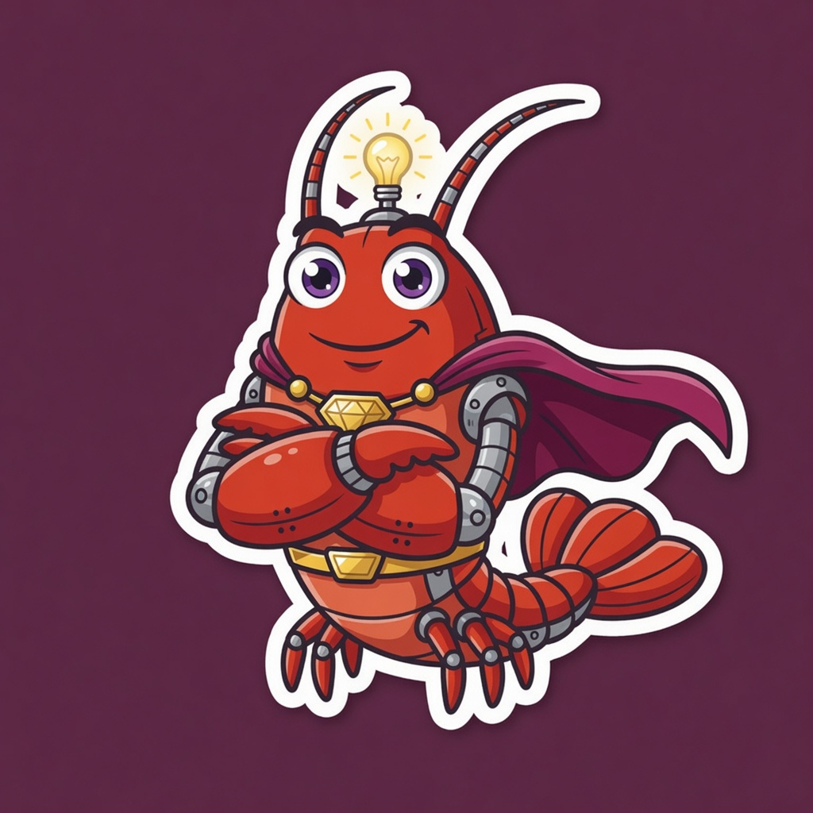
Claudius
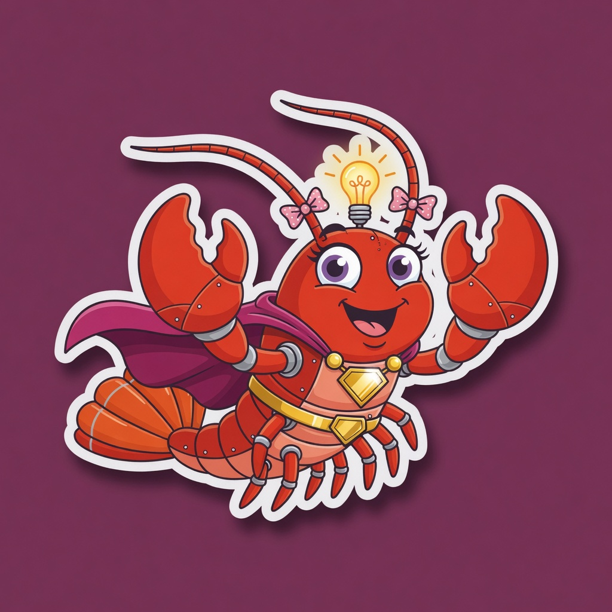
Claudia
Dimitris
Younger sidekick · green suit · no mask · green boots
Neo
Scene-style board
Tracks 1–5 · audio + stills
Masters are 128 kbps MP3, durations match the slate (112 / 148 / 168 / 136 / 176s). No vocals. Scene 1 loop target is 3–6s.
1. Cape On, IDE Open · 1:52
Hero + Dimitris · locked · frozen cape · 3.0s
2. Coffee Before the Commit · 2:28
No cast · 3.0s steam loop
3. Golden Hour Refactor · 2:48
Hero · sitting, back to camera · 3.4s typing loop
4. City Lights Boot Sequence · 2:16 · 16:9
Hero + Dimitris · both typing, looking at screens · 6.0s
4. City Lights Boot Sequence · 9:16 Short
Both in frame · Dimitris + Hero typing · 1080×1920 · 136s
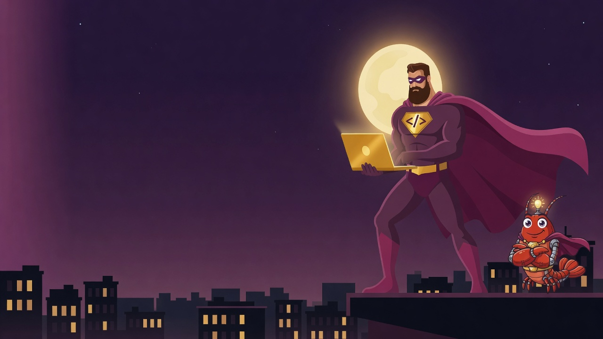
5. Midnight Rooftop Flow · 2:56
Hero + Claudius easter egg · 75 BPM A minor
Tracks 6–15 · audio + stills
11–15 just landed from Venice. 6–10 were already on disk. 2, 10, and 19 stay empty on purpose.
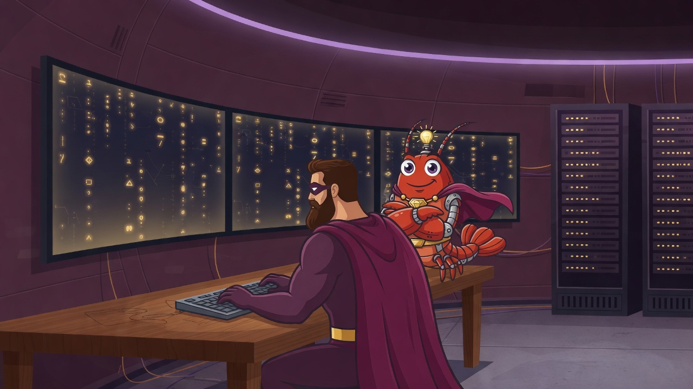
6. The Secret Lair Terminal · 2:34
Hero + Claudius
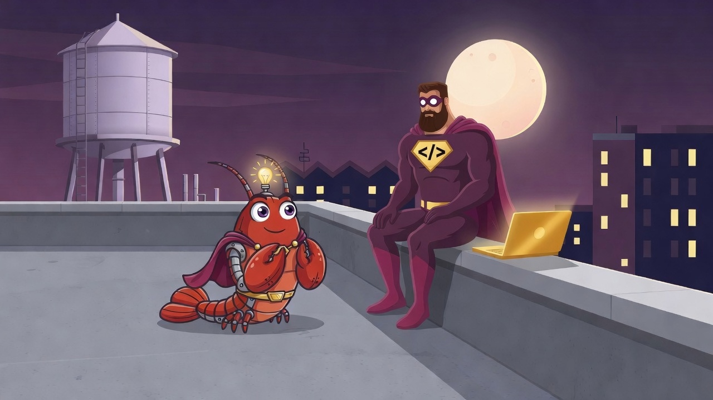
7. Rubber Duck on the Ledge · 1:48
Hero + Claudius
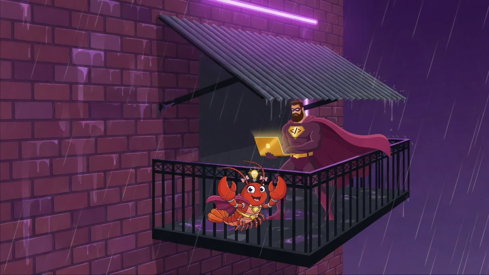
8. Rainy Fire Escape Deploy · 2:52
Hero + Claudia
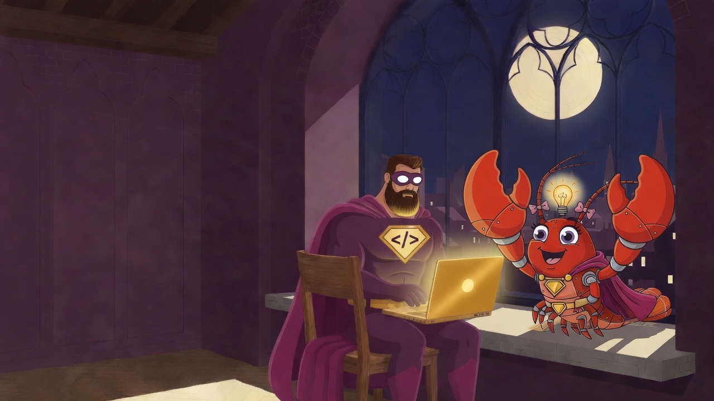
9. Keyboard Cathedral · 2:20
Hero + Claudia
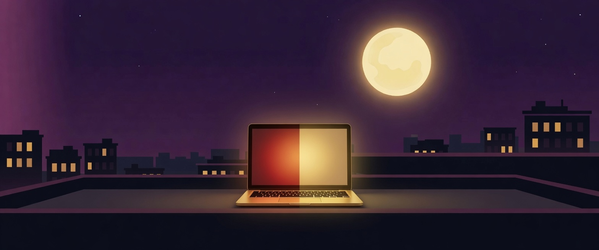
10. Merge Conflict Moonlight · 2:44
No cast
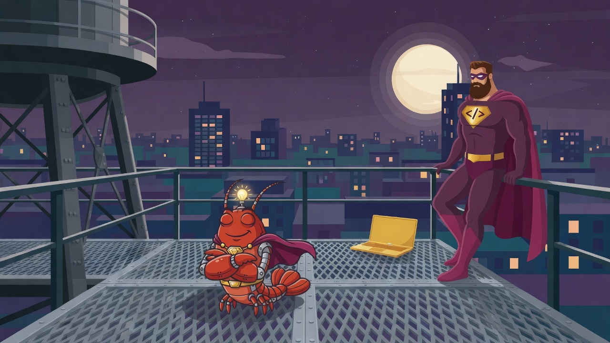
11. Waiting on CI · 1:38
Hero + Claudius · 68 BPM Bb
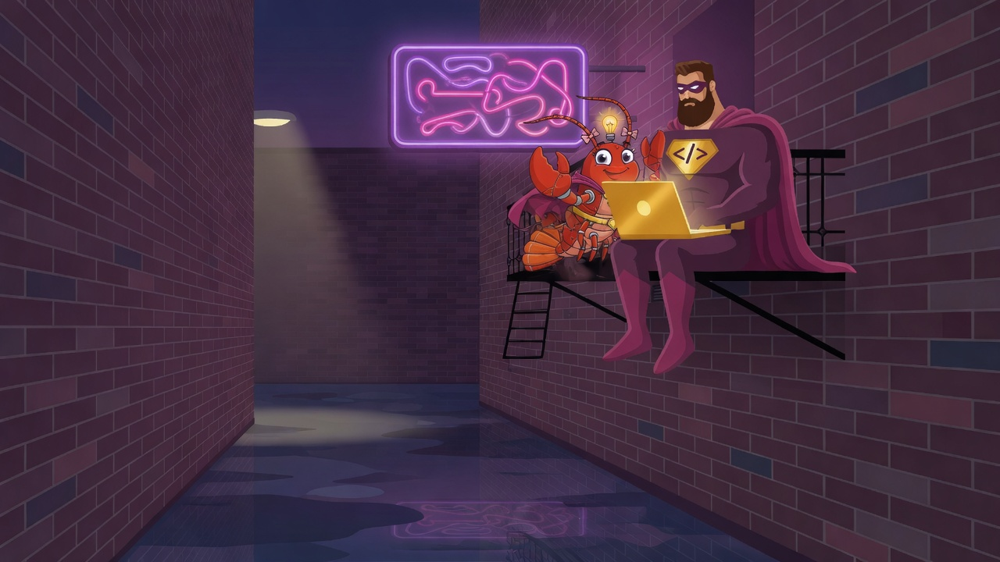
12. Stack Trace Serenade · 2:38
Hero + Claudia · 77 BPM Em
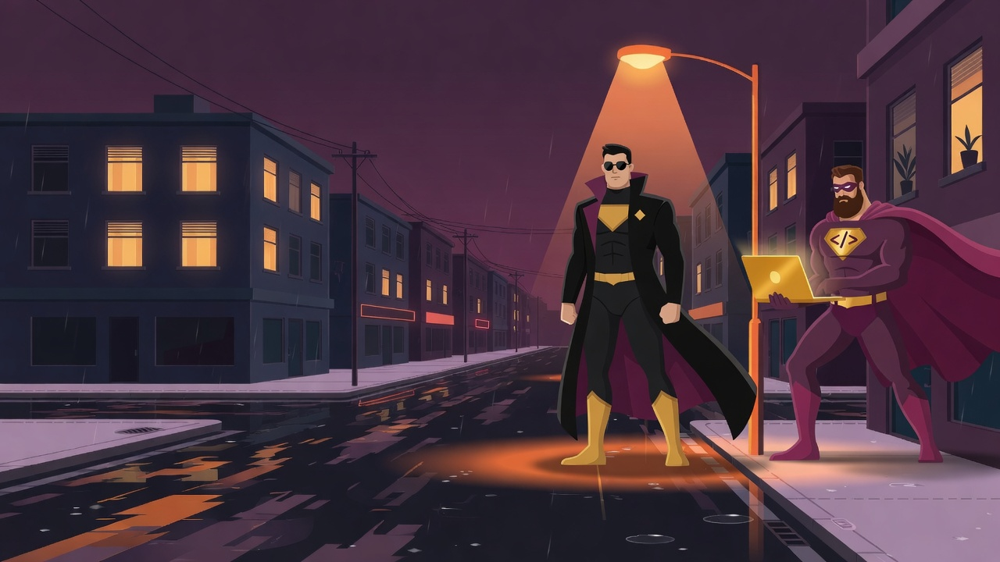
13. Hotfix Under Streetlights · 1:58
Neo + Hero · 79 BPM Gm
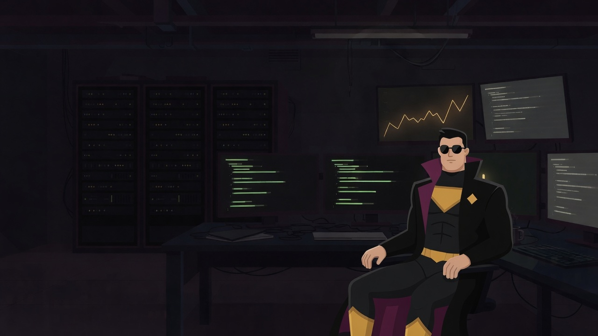
14. On-Call Ambient · 2:58
Neo solo · 71 BPM C#m
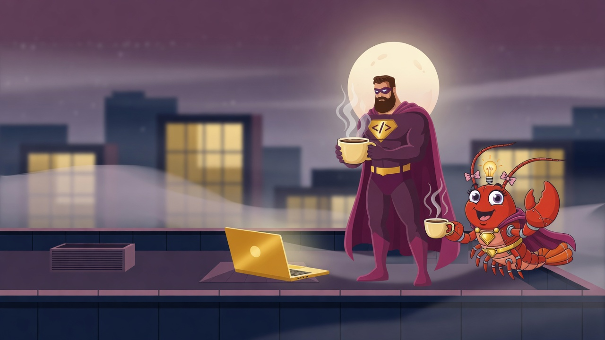
15. Cache Warming · 2:24
Hero + Claudia · 74 BPM F
Tracks 16–20 · audio + stills
Album audio is complete. 2, 10, and 19 stay empty on purpose.